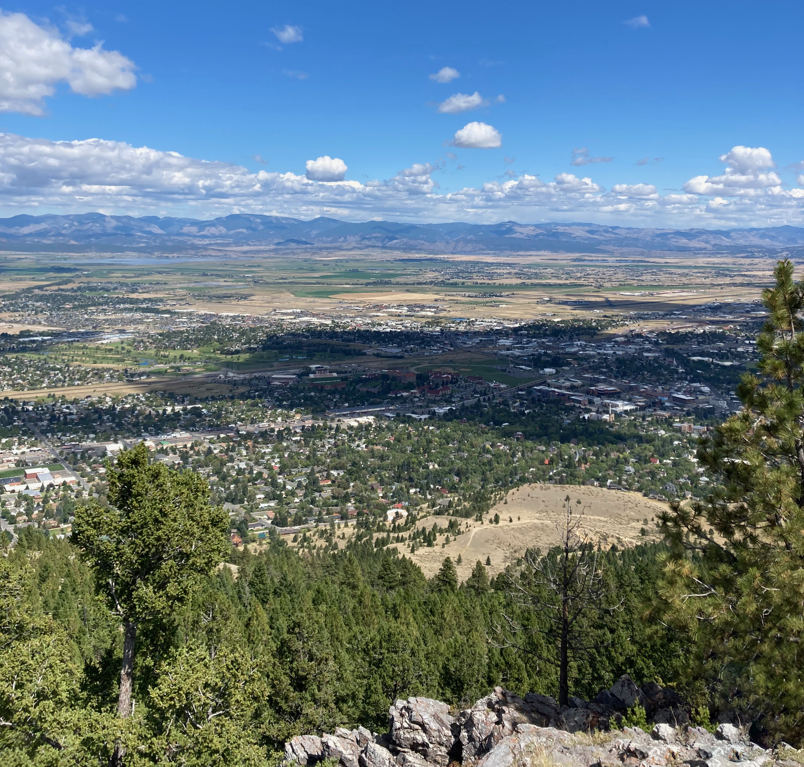

Summer is the hottest of the four temperate seasons, occurring after spring and before autumn. At or centred on the summer solstice, the earliest sunrise and latest sunset occurs, daylight hours are longest and dark hours are shortest, with day length decreasing as the season progresses after the solstice. The date of the beginning of summer varies according to climate, tradition, and culture. When it is summer in the Northern Hemisphere, it is winter in the Southern Hemisphere, and vice versa.
From an astronomical view, the equinoxes and solstices would be the middle of the respective seasons, but sometimes astronomical summer is defined as starting at the solstice, the time of maximal insolation, often identified with the 21st day of June or December.
The meteorological convention is to define summer as comprising the months of June, July, and August in the northern hemisphere and the months of December, January, and February in the southern hemisphere. Under meteorological definitions, all seasons are arbitrarily set to start at the beginning of a calendar month and end at the end of a month. This meteorological definition of summer also aligns with the commonly viewed notion of summer as the season with the longest (and warmest) days of the year, in which daylight predominates.